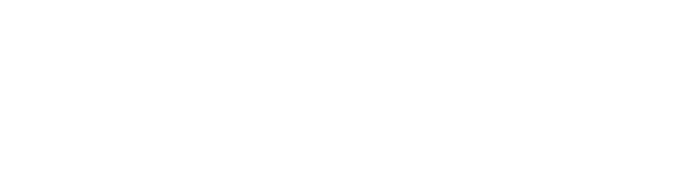
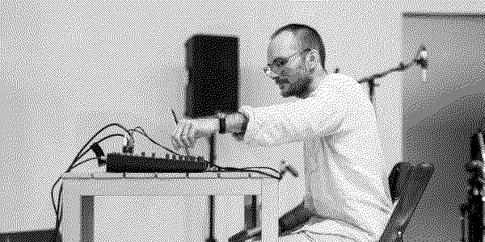

Hello dear beautiful human beings. This page lets you learn basic information on the runway. We are happy to be with you today.
Nile and Dylan
↓
The walking should be very standard. Walk in a straight line, and keep turns light and continuous without stopping. The music is in a 4/4 beat, so you can walk in the same tempo as the music. Your facial expression should remain neutral—relaxed and not too strong. During the finale, please make sure the spacing between you and the models in front of and behind you stays tight.
↓Please refer to the dots above for the walking speed, corresponding to the left and right foot tempo. You can try it out before the rehearsal.
↓
The music is composed by New York–based musician Ben Vida. It is a minimal soundtrack that includes a text being read throughout the runway show. Two vocalists will be on the runway, reading the same text simultaneously. Have a listen to this excerpt before the show so you know what to expect:
CFCL continues its creative practice guided by a fundamental question: can fashion contribute to shaping a better society? As a medium that connects society and the individual wearer, clothing functions as an artwork of multiples, allowing the intentions of its maker to spread through the act of wearing. With the VOL.12 Collection, CFCL reconceives the concept of "social sculpture" proposed by Joseph Beuys, marking forty years since his passing. By bringing together social activism and art, Beuys sought to create new forms of society and expanded the definition of art itself. Drawing from his practice, which moves across social impact, creative expression and aesthetic awareness, CFCL layers the conceptual notion of sculpture onto Knit-ware.
↑